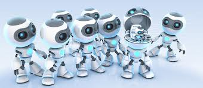

TechnoKshetra-15: WORKSHOPS
| | |
Computer-aided design (CAD) is the use of computer systems to assist in the creation, modification, analysis, or optimization of a design. CAD software is used to increase the productivity of the designer, improve the quality of design, improve communications through documentation, and to create a database for manufacturing. | |
| | |
| Software testing is an investigation conducted to provide stakeholders with information about the quality of the product or service under test Software testing can also provide an objective, independent view of the software to allow the business to appreciate and understand the risks of software implementation. | |
| | |
CATIA enables the creation of 3D parts, from 3D sketches, sheetmetal, composites, molded, forged or tooling parts up to the definition of mechanical assemblies. The software provides advanced technologies for mechanical surfacing & BIW.The CATIA Systems Engineering solution delivers a unique open and extensible systems engineering development platform that fully integrates the cross-discipline modeling | |
| | |
 | The process used for generating animated images by using computer graphics. The more general term computer-generated imagery encompasses both static scenes and dynamic images while computer animation only refers to moving images.Modern computer animation usually uses 3D computer graphics, although 2D computer graphics are still used for stylistic, low bandwidth, and faster real-time renderings. Rules & Regulation |
| | |
|  | Robotics is the branch of mechanical engineering, electrical engineering and computer science that deals with the design, construction, operation, and application of robots, as well as computer systems for their control, sensory feedback, and information processing.These technologies deal with automated machines that can take the place of humans in dangerous environments or manufacturing processes, or resemble humans in appearance, behavior, and/or cognition. |